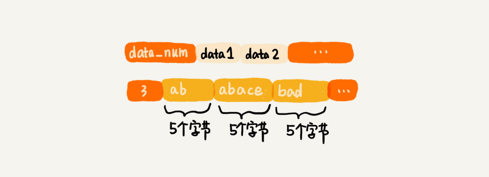

52 | 算法实战（一）：剖析Redis常用数据类型对应的数据结构
到此为止，专栏前三部分我们全部讲完了。从今天开始，我们就正式进入实战篇的部分。这部分我主要通过一些开源项目、经典系统，真枪实弹地教你，如何将数据结构和算法应用到项目中。所以这部分的内容，更多的是知识点的回顾，相对于基础篇、高级篇的内容，其实这部分会更加容易看懂。
不过，我希望你不要只是看懂就完了。你要多举一反三地思考，自己接触过的开源项目、基础框架、中间件中，都用过哪些数据结构和算法。你也可以想一想，在自己做的项目中，有哪些可以用学过的数据结构和算法进一步优化。这样的学习效果才会更好。
好了，今天我就带你一块儿看下，经典数据库 Redis 中的常用数据类型，底层都是用哪种数据结构实现的？
Redis 数据库介绍
Redis 是一种键值（Key-Value）数据库。相对于关系型数据库（比如 MySQL），Redis 也被叫作非关系型数据库。
像 MySQL 这样的关系型数据库，表的结构比较复杂，会包含很多字段，可以通过 SQL 语句，来实现非常复杂的查询需求。而 Redis 中只包含“键”和“值”两部分，只能通过“键”来查询“值”。正是因为这样简单的存储结构，也让 Redis 的读写效率非常高。
除此之外，Redis 主要是作为内存数据库来使用，也就是说，数据是存储在内存中的。尽管它经常被用作内存数据库，但是，它也支持将数据存储在硬盘中。这一点，我们后面会介绍。
Redis 中，键的数据类型是字符串，但是为了丰富数据存储的方式，方便开发者使用，值的数据类型有很多，常用的数据类型有这样几种，它们分别是字符串、列表、字典、集合、有序集合。
“字符串（string）”这种数据类型非常简单，对应到数据结构里，就是字符串。你应该非常熟悉，这里我就不多介绍了。我们着重看下，其他四种比较复杂点的数据类型，看看它们底层都依赖了哪些数据结构。
列表（list）
我们先来看列表。列表这种数据类型支持存储一组数据。这种数据类型对应两种实现方法，一种是压缩列表（ziplist），另一种是双向循环链表。
当列表中存储的数据量比较小的时候，列表就可以采用压缩列表的方式实现。具体需要同时满足下面两个条件：
- 列表中保存的单个数据（有可能是字符串类型的）小于 64 字节；
- 列表中数据个数少于 512 个。
关于压缩列表，我这里稍微解释一下。它并不是基础数据结构，而是 Redis 自己设计的一种数据存储结构。它有点儿类似数组，通过一片连续的内存空间，来存储数据。不过，它跟数组不同的一点是，它允许存储的数据大小不同。具体的存储结构也非常简单，你可以看我下面画的这幅图。

现在，我们来看看，压缩列表中的“压缩”两个字该如何理解？
听到“压缩”两个字，直观的反应就是节省内存。之所以说这种存储结构节省内存，是相较于数组的存储思路而言的。我们知道，数组要求每个元素的大小相同，如果我们要存储不同长度的字符串，那我们就需要用最大长度的字符串大小作为元素的大小（假设是 20 个字节）。那当我们存储小于 20 个字节长度的字符串的时候，便会浪费部分存储空间。听起来有点儿拗口，我画个图解释一下。

压缩列表这种存储结构，一方面比较节省内存，另一方面可以支持不同类型数据的存储。而且，因为数据存储在一片连续的内存空间，通过键来获取值为列表类型的数据，读取的效率也非常高。
当列表中存储的数据量比较大的时候，也就是不能同时满足刚刚讲的两个条件的时候，列表就要通过双向循环链表来实现了。
在链表里，我们已经讲过双向循环链表这种数据结构了，如果不记得了，你可以先回去复习一下。这里我们着重看一下 Redis 中双向链表的编码实现方式。
Redis 的这种双向链表的实现方式，非常值得借鉴。它额外定义一个 list 结构体，来组织链表的首、尾指针，还有长度等信息。这样，在使用的时候就会非常方便。
// 以下是 C 语言代码，因为 Redis 是用 C 语言实现的。
typedef struct listnode {
struct listNode *prev;
struct listNode *next;
void *value;
} listNode;
typedef struct list {
listNode *head;
listNode *tail;
unsigned long len;
// .... 省略其他定义
} list;
字典（hash）
字典类型用来存储一组数据对。每个数据对又包含键值两部分。字典类型也有两种实现方式。一种是我们刚刚讲到的压缩列表，另一种是散列表。
同样，只有当存储的数据量比较小的情况下，Redis 才使用压缩列表来实现字典类型。具体需要满足两个条件：
- 字典中保存的键和值的大小都要小于 64 字节；
- 字典中键值对的个数要小于 512 个。
当不能同时满足上面两个条件的时候，Redis 就使用散列表来实现字典类型。Redis 使用MurmurHash2这种运行速度快、随机性好的哈希算法作为哈希函数。对于哈希冲突问题，Redis 使用链表法来解决。除此之外，Redis 还支持散列表的动态扩容、缩容。
当数据动态增加之后，散列表的装载因子会不停地变大。为了避免散列表性能的下降，当装载因子大于 1 的时候，Redis 会触发扩容，将散列表扩大为原来大小的 2 倍左右（具体值需要计算才能得到，如果感兴趣，你可以去阅读源码）。
当数据动态减少之后，为了节省内存，当装载因子小于 0.1 的时候，Redis 就会触发缩容，缩小为字典中数据个数的大约 2 倍大小（这个值也是计算得到的，如果感兴趣，你也可以去阅读源码）。
我们前面讲过，扩容缩容要做大量的数据搬移和哈希值的重新计算，所以比较耗时。针对这个问题，Redis 使用我们在散列表（中）讲的渐进式扩容缩容策略，将数据的搬移分批进行，避免了大量数据一次性搬移导致的服务停顿。
集合（set）
集合这种数据类型用来存储一组不重复的数据。这种数据类型也有两种实现方法，一种是基于有序数组，另一种是基于散列表。
当要存储的数据，同时满足下面这样两个条件的时候，Redis 就采用有序数组，来实现集合这种数据类型。
- 存储的数据都是整数；
- 存储的数据元素个数不超过 512 个。
当不能同时满足这两个条件的时候，Redis 就使用散列表来存储集合中的数据。
有序集合（sortedset）
有序集合这种数据类型，我们在跳表里已经详细讲过了。它用来存储一组数据，并且每个数据会附带一个得分。通过得分的大小，我们将数据组织成跳表这样的数据结构，以支持快速地按照得分值、得分区间获取数据。
实际上，跟 Redis 的其他数据类型一样，有序集合也并不仅仅只有跳表这一种实现方式。当数据量比较小的时候，Redis 会用压缩列表来实现有序集合。具体点说就是，使用压缩列表来实现有序集合的前提，有这样两个：
- 所有数据的大小都要小于 64 字节；
- 元素个数要小于 128 个。
数据结构持久化
尽管 Redis 经常会被用作内存数据库，但是，它也支持数据落盘，也就是将内存中的数据存储到硬盘中。这样，当机器断电的时候，存储在 Redis 中的数据也不会丢失。在机器重新启动之后，Redis 只需要再将存储在硬盘中的数据，重新读取到内存，就可以继续工作了。
刚刚我们讲到，Redis 的数据格式由“键”和“值”两部分组成。而“值”又支持很多数据类型，比如字符串、列表、字典、集合、有序集合。像字典、集合等类型，底层用到了散列表，散列表中有指针的概念，而指针指向的是内存中的存储地址。 那 Redis 是如何将这样一个跟具体内存地址有关的数据结构存储到磁盘中的呢？
实际上，Redis 遇到的这个问题并不特殊，很多场景中都会遇到。我们把它叫作数据结构的持久化问题，或者对象的持久化问题。这里的“持久化”，你可以笼统地可以理解为“存储到磁盘”。
如何将数据结构持久化到硬盘？我们主要有两种解决思路。
第一种是清除原有的存储结构，只将数据存储到磁盘中。当我们需要从磁盘还原数据到内存的时候，再重新将数据组织成原来的数据结构。实际上，Redis 采用的就是这种持久化思路。
不过，这种方式也有一定的弊端。那就是数据从硬盘还原到内存的过程，会耗用比较多的时间。比如，我们现在要将散列表中的数据存储到磁盘。当我们从磁盘中，取出数据重新构建散列表的时候，需要重新计算每个数据的哈希值。如果磁盘中存储的是几 GB 的数据，那重构数据结构的耗时就不可忽视了。
第二种方式是保留原来的存储格式，将数据按照原有的格式存储在磁盘中。我们拿散列表这样的数据结构来举例。我们可以将散列表的大小、每个数据被散列到的槽的编号等信息，都保存在磁盘中。有了这些信息，我们从磁盘中将数据还原到内存中的时候，就可以避免重新计算哈希值。
总结引申
今天，我们学习了 Redis 中常用数据类型底层依赖的数据结构，总结一下大概有这五种：压缩列表（可以看作一种特殊的数组）、有序数组、链表、散列表、跳表。实际上，Redis 就是这些常用数据结构的封装。
你有没有发现，有了数据结构和算法的基础之后，再去阅读 Redis 的源码，理解起来就容易多了？很多原来觉得很深奥的设计思想，是不是就都会觉得顺理成章了呢？
还是那句话，夯实基础很重要。同样是看源码，有些人只能看个热闹，了解一些皮毛，无法形成自己的知识结构，不能化为己用，过不几天就忘了。而有些人基础很好，不但能知其然，还能知其所以然，从而真正理解作者设计的动机。这样不但能有助于我们理解所用的开源软件，还能为我们自己创新添砖加瓦。
课后思考
- 你有没有发现，在数据量比较小的情况下，Redis 中的很多数据类型，比如字典、有序集合等，都是通过多种数据结构来实现的，为什么会这样设计呢？用一种固定的数据结构来实现，不是更加简单吗？
- 我们讲到数据结构持久化有两种方法。对于二叉查找树这种数据结构，我们如何将它持久化到磁盘中呢？